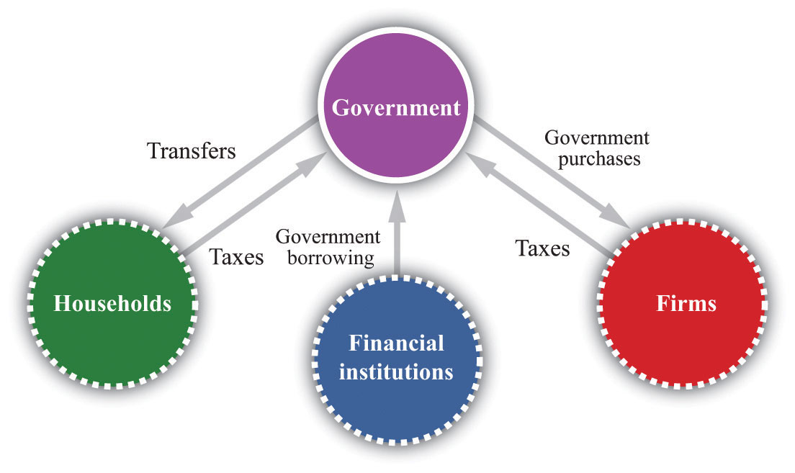
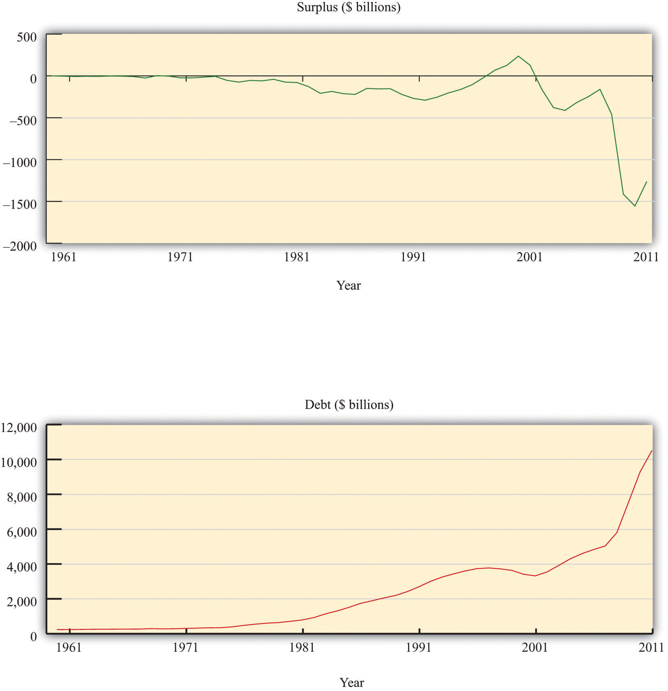
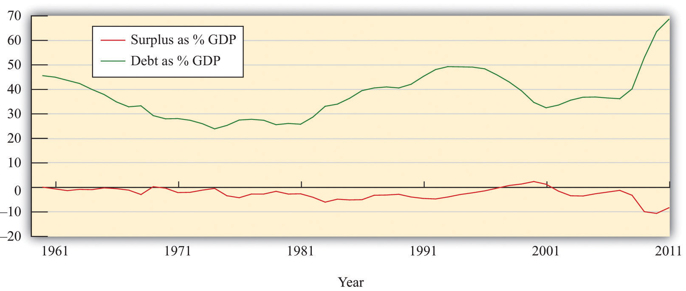

After you have read this section, you should be able to answer the following questions:
We begin by being careful and precise about terminology. The terms deficit and debt are sometimes used sloppily in everyday discourse; as a consequence, much nonsense is spoken about fiscal policy. We must first make sure that we understand exactly what these terms mean.The CBO (http://www.cbo.gov/showdoc.cfm?index=6060&sequence=13) has a glossary of terms on its web page.
The government deficitThe difference between government outlays and revenues. is the difference between government outlaysGovernment purchases of goods and services plus transfers. and government revenuesMoney that flows into the government sector from households and firms, largely through taxation.. Inflows and outflows are part of the circular flow of income. Revenues flow to the government when it imposes taxes on households and firms and when it collects money through various other fees. For our purposes here, we do not need to distinguish all the different kinds of taxes, and we do not worry about whether they are paid by firms or by households. All that matters is that, in the end, some of the income generated in the economy flows to the government.The government also collects Social Security payments, which are discussed in more detail in Chapter 28 "Social Security". These are just another kind of tax.
Money flows out in the form of government purchases of goods and services and government transfers. Government purchasesSpending by the government on goods and services. include things like roads, streetlamps, schools, and missiles. They also include wage payments for government employees—that is, the purchase of the services of teachers, soldiers, and civil servants. Outlays also occur when government gives money to households. These are called transfer payments, or transfersA cash payment from the government to individuals and firms. for short. Examples include unemployment insurance, Social Security payments, and Medicare payments. Finally, transfers include the interest payments of the government on its outstanding obligations.
The outlays of the government and its revenues are not always equal. The difference between government purchases and transfers and government revenues represents a government deficit, as set out in the following definition:
government deficit = outlays – revenues = government purchases + transfers − tax revenues = government purchases − (tax revenues − transfers) = government purchases − net taxes.Often we find it useful to group taxes and transfers together as “net taxes” and separate out government purchases, as in the last line of our definition.
When outflows are less than inflows, then we say there is a government surplusTotal tax revenues collected by the governments less its purchases of goods and services and transfers to households.. In other words, a negative government deficit is the same thing as a positive government surplus, and a negative government surplus is the same thing as a positive government deficit:
government surplus = −government deficit.A government surplus is sometimes called “government savings.” When the government runs a deficit, borrowing from the financial markets funds such spending. When the government runs a surplus, these funds flow into the financial markets and are available for firms to borrow.
To illustrate the calculation of the deficit, we examine some made-up numbers in Table 29.1 "Calculating the Deficit". Our equation defining the deficit tells us that we can calculate it two ways. Look, for example, at year 3. The level of government spending is 200, tax receipts are 160, and transfers are 20.
Obviously, we get the same answer either way; it is just a matter of how we group the different terms together. It might seem natural to group transfers with government expenditures (since they are both outlays). Conceptually, though, transfers are more like taxes, in that they represent a flow of dollars that is not matched by a flow of goods or services. The difference is that taxes flow from into the government; transfers flow the other way. Government expenditures are very different: they represent purchases of real gross domestic product (real GDP) produced in the economy, thus contributing to the overall demand for output.
Table 29.1 Calculating the Deficit
| Year | Government Purchases | Tax Revenues | Transfers | Net Taxes | Deficit |
|---|---|---|---|---|---|
| 1 | 50 | 30 | 10 | 20 | 30 |
| 2 | 100 | 160 | 40 | 120 | −20 |
| 3 | 200 | 160 | 20 | 140 | 60 |
| 4 | 200 | 220 | 20 | 200 | 0 |
| 5 | 140 | 160 | 20 | 140 | 0 |
In Table 29.1 "Calculating the Deficit", the deficit varies considerably over time. It is low in year 1, negative in year 2 (in other words, there is a surplus), high in year 3, and zero in years 4 and 5. Between year 1 and year 2, government purchases and transfers increased, but tax revenues increased even more. In fact, they increased sufficiently to turn the deficit into a surplus. Between years 2 and 3, government purchases increased, and transfers decreased. However, the decrease in transfers was less than the increase in government purchases, so total government outlays increased substantially. Tax revenues stayed constant, so the government went back into deficit.
In years 4 and 5 the government ran a balanced budget. If we compare year 4 to year 3, we see that the budget could be balanced by raising taxes (from 160 to 220) and leaving outlays unchanged. Conversely, by comparing year 5 to year 3, we see that the budget could be balanced by cutting spending and leaving taxes unchanged. A balanced budget is consistent with high taxes and high spending or low taxes and low spending. It is the combination of low taxes and high spending that give us a deficit. Table 29.1 "Calculating the Deficit" makes it clear that changes in the deficit can be explained only by examining all components of the government budget constraint.
We begin with the government budget constraint as it operates in a single year. This budget constraint can be seen in terms of the flows into and from the government sector in the circular flow, as shown in Figure 29.1 "The Government Sector in the Circular Flow" (which explicitly shows that taxes come from households and firms). Later we discuss a second government budget constraint that links spending and revenues over longer periods of time.
Figure 29.1 The Government Sector in the Circular Flow
The inflows into the government sector come from taxes and borrowing from the financial sector. The outflows comprise government purchases and government transfers.
You might be wondering how it is possible for the government to have outlays that exceed its revenues. The answer is given by the government budget constraint. The government budget constraintA limit stating that the deficit must be financed by issuing government debt. says that the deficit, which is the difference between outlays and revenues, must be financed by borrowing. If outlays exceed revenues in a given year, then the government must somehow make up the difference. It does so by borrowing from the public. In this sense, the government is no different from a household. Each of us can, like the government, spend more than we earn. When we do, we must either borrow from someone or draw on our savings from the past.
The government borrows by issuing government debtThe total outstanding obligations of a government at a point in time.. This debt can take several forms. The government has many types of obligations, ranging from short-term Treasury Bills to longer-term bonds. For our analysis, we do not need to distinguish among these different assets.
Toolkit: Section 31.33 "The Government Budget Constraint" and Section 31.27 "The Circular Flow of Income"
You can review the government budget constraint and the circular flow of income in the toolkit.
Table 29.2 "Recent Experience of Deficits and Surpluses (Billions of Dollars)" shows some actual numbers for the United States: receipts, outlays, and the federal budget deficit in current dollars for fiscal years 1990 to 2010.Government budget numbers in the United States are reported for a “fiscal year,” which runs from October to September. Thus fiscal year 2000 ran from October 1, 1999, to September 30, 2000.
Table 29.2 Recent Experience of Deficits and Surpluses (Billions of Dollars)
| Fiscal Year | Receipts | Outlays | Surplus or Deficit (−) |
|---|---|---|---|
| 1990 | 1,032.0 | 1,253.1 | −221.0 |
| 1991 | 1,055.1 | 1,324.3 | −269.2 |
| 1992 | 1,091.3 | 1,381.6 | −290.3 |
| 1993 | 1,154.5 | 1,409.5 | −255.1 |
| 1994 | 1,258.7 | 1,461.9 | −203.2 |
| 1995 | 1,351.9 | 1,515.9 | −164.0 |
| 1996 | 1,453.2 | 1,560.6 | −107.4 |
| 1997 | 1,579.4 | 1,601.3 | −21.9 |
| 1998 | 1,722.0 | 1,652.7 | 69.3 |
| 1999 | 1,827.6 | 1,702.0 | 125.6 |
| 2000 | 2,025.5 | 1,789.2 | 236.2 |
| 2001 | 1,991.4 | 1,863.2 | 128.2 |
| 2002 | 1,853.4 | 2,011.2 | −157.8 |
| 2003 | 1,782.5 | 2,160.1 | −377.6 |
| 2004 | 1,880.3 | 2,293.0 | −412.7 |
| 2005 | 2,153.9 | 2,472.2 | −318.3 |
| 2006 | 2,406.9 | 2,655.1 | −248.2 |
| 2007 | 2,568.0 | 2,728.7 | –160.7 |
| 2008 | 2,524.0 | 2,982.5 | –458.6 |
| 2009 | 2,105.0 | 3,517.7 | –1,412.7 |
| 2010 | 2,161.7 | 3,455.8 | –1,294.1 |
Source: “Historical Budget Tables,” Congressional Budget Office, January 2011, accessed September 20, 2011, http://www.cbo.gov/ftpdocs/120xx/doc12039/HistoricalTables[1].pdf.
In the early 1990s, the government ran a deficit of about $200–300 billion every year. (Note that a negative number in the last column corresponds to a government deficit.) In the mid-1990s, however, the deficit began to decrease. Both outlays and receipts were increasing, but receipts were increasing more quickly. By 1998, the federal budget was in surplus, and it reached a peak of $236 billion in 2000. Thereafter, revenues decreased for several years, while spending continued to increase. By 2002, the budget had gone back into deficit again, and by the middle of the decade, the deficit was at record levels.
As is evident from Table 29.2 "Recent Experience of Deficits and Surpluses (Billions of Dollars)", the budgetary picture changed dramatically with the onset of the severe recession in 2008. Revenues decreased and outlays increased so that the budget deficit widened considerably, to more than $1 trillion in both 2009 and 2010.
If you look at data on the government budget, you will see that the federal budget is divided into “on-budget” and “off-budget” items. Table 29.3 "On-Budget, Off-Budget, and Total Surplus, 2010 (Billions of Dollars)" shows these numbers for fiscal year 2010. The Congressional Budget Office defines off-budget items as follows. “Spending or revenues excluded from the budget totals by law. The revenues and outlays of the two Social Security trust funds (the Federal Old-Age and Survivors Insurance Trust Fund and the Disability Insurance Trust Fund) and the transactions of the Postal Service are off-budget.”Congressional Budget Office, Glossary, accessed October 19, 2011, http://www.cbo.gov/doc.cfm?index=2727&type=0&sequence=14
The transactions of the US Postal Service are not that important, so you can essentially think of the off-budget items as being the Social Security system. Since the Social Security system was in surplus over much of this period, the on-budget deficit is larger than the total. From Table 29.3 "On-Budget, Off-Budget, and Total Surplus, 2010 (Billions of Dollars)", the total government deficit of $1,294 billion in 2010 reflects an on-budget deficit and a small off-budget surplus.
The idea behind the separate budgeting is that Social Security represents a known set of future government obligations. For this reason the government has, in effect, set aside a separate account for Social Security revenues and outlays (much as you, as an individual, might decide you want a separate account for your savings).We discussed the Social Security Trust Fund, as this account is called, in Chapter 28 "Social Security". At least in theory, this separates the debate about Social Security from the debate about current government spending and receipts. Many policy discussions do focus just on the “on-budget” accounts. In the end, though, all these monies flow either into or from the federal government. The humorist Dave Barry once remarked that what distinguishes off-budget items is that “these are written down on a completely different piece of paper from the regular budget.”Dave Barry, “The Mallomar Method,” DaveBarry.com, March 24, 1991, accessed August 28, 2011, http://www.davebarry.com/misccol/mallomar.htm. What is more, there are other known future obligations, such as Medicare, that are not treated separately. The on-budget/off-budget distinction is really no more than an accounting fiction, and in terms of the overall economic effects of the deficit, it is better to focus on the total.
Table 29.3 On-Budget, Off-Budget, and Total Surplus, 2010 (Billions of Dollars)
| Receipts | Outlays | Surplus or Deficit (−) | |
|---|---|---|---|
| On-Budget | 1,530.1 | 2,9091.1 | −1,371.1 |
| Off-Budget | 631.7 | 554.7 | 77.0 |
| Total | 2,161.7 | 3,455.8 | −1,294.1 |
Source: US Treasury, Financial Management Service, October 2010 Statement, accessed September 20, 2011, http://www.fms.treas.gov/mts/mts0910.txt.
There are mixed messages to take away from Table 29.2 "Recent Experience of Deficits and Surpluses (Billions of Dollars)". The experience of budget surpluses in the 1990s tells us that budget balancing is possible. At the same time, more recent experience suggests that substantial changes in receipts and/or outlays are now needed to balance the budget. To explore this somewhat further, look at Table 29.4 "Federal Outlays, 2010 (Billions of Dollars)", which shows various outlays for 2010. As we already know, total spending for that year was $3.5 trillion. National defense, Social Security, and health-care programs together account for $2.2 trillion, or about 63 percent of the total outlays. Other nondiscretionary spending—largely outlays such as retirement payments to federal employees, unemployment insurance, housing assistance, and food stamps—accounts for a further $401 billion. Interest payments account for $196 billion. These categories together account for more than 80 percent of federal outlays.
Table 29.4 Federal Outlays, 2010 (Billions of Dollars)
| Item | Amount | Total Outlays (%) |
|---|---|---|
| Defense | 689 | 19.9 |
| Nondefense Discretionary Spending | 658 | 19.0 |
| Social Security | 701 | 20.3 |
| Health Care Programs (including Medicare and Medicaid) | 810 | 23.4 |
| Other Nondiscretionary Spending | 401 | 11.6 |
| Interest Payments | 196 | 5.7 |
| Total | 3,456 | 100.0 |
Source: Compiled from data in CBO, “The Budget and Economic Outlook: An Update,” August 2011, accessed September 20, 2011, http://www.cbo.gov/ftpdocs/123xx/doc12316/08-24-BudgetEconUpdate.pdf. Totals do not add up because of rounding errors.
Just looking at those numbers should make it clear that it is very difficult to balance the budget simply by cutting federal spending. Almost everyone agrees that there is waste in the federal government, and there are programs that could and almost certainly should be abolished. (This is not to say that you could find even a single program that everyone would want to abolish. Every program benefits someone, after all. But there are certainly programs that most people would agree are wasteful.) However, the vast majority of the budget is taken up with either essential functions of government or programs that enjoy huge political popularity. Few politicians would sign up for closing the public schools, the abolition of unemployment insurance, or the cancellation of veterans’ benefits.
The budget accounts distinguish between mandatory and discretionary spending. Many of the big items listed in Table 29.4 "Federal Outlays, 2010 (Billions of Dollars)" fall into the mandatory category—that is, outlays that are required by existing law. Less than 40 percent of outlays in 2010 were discretionary, and half of those were national defense spending. The remaining outlays were mandatory spending or payment of interest on the outstanding debt.“Budget and Economic Outlook: Historical Budget Data,” Congressional Budget Office, January 2011, accessed July 20, 2011, http://www.cbo.gov/ftpdocs/120xx/doc12039/HistoricalTables[1].pdf.
If the government were to pass a balanced-budget amendment, in other words, the hard job of cutting spending or raising taxes would remain. Recall Section 3 of the amendment that we quoted in the chapter opener: “the President shall transmit to Congress a proposed budget…in which total outlays do not exceed total receipts.” Even with a balanced-budget amendment, the president would still have to propose either major cuts in existing popular programs or increases in taxes. However, such an amendment might provide “political cover” for the president and Congress: they could explain their support for unpopular spending cuts or tax increases by saying that the balanced-budget amendment gave them no choice.
We discussed in Section 29.1.2 "The Single-Year Government Budget Constraint" that the single-period government budget constraint links spending and revenues to the deficit (or surplus) of the government each year. There is a second constraint faced by the government, called the intertemporal budget constraintA limit stating that the discounted present value of taxes minus the discounted present value of outlays (excluding interest on the debt) must equal the current stock of debt outstanding., linking deficits in one year to deficits in other years.
When you take out a loan, you will ultimately have to repay it. The same is true of the government; when it takes out a loan, it will ultimately have to repay the loan as well. If the government chooses to pay for its expenditures today by borrowing instead of through current taxes, then it will need additional taxes at some point in the future to pay off its loan. The intertemporal budget constraint is just a fancy way of saying that, like everyone else, the government has to pay off its loans at some point.Actually, there is one way in which the government is different from private individuals. For practical purposes, we expect that the government will go on forever. This means that the government could always have a stock of outstanding debt. However, there are practical limits on this stock—for one thing, households will not lend unlimited amounts to the government. Thus it is generally fair to say that additional borrowing by the government will have to be repaid. As a consequence, tax and spending decisions at different dates are linked. Although governments can borrow or lend in a given year, the government’s total spending over time must be matched by revenues.
To express the intertemporal budget constraint, we introduce a measure of the deficit called the primary deficitThe difference between government outlays, excluding interest payments and government revenues.. The primary deficit is the difference between government outlays, excluding interest payments on the debt, and government revenues. The primary surplusThe inverse of the primary deficit. is equal to the minus of the primary deficit and is the difference between government revenues and government outlays, excluding interest payments on the debt. In our example in Table 29.1 "Calculating the Deficit", the deficit in year 1 was 30. If payment of interest on outstanding debt was 5, then the primary deficit would be 25, and the primary surplus would be −25.
The intertemporal budget constraint says that if the government has some existing debt, it must run surpluses in the future so that it can ultimately pay off that debt. Specifically, it is the requirement that
current debt outstanding = discounted present value of future primary surpluses.This condition means that the debt outstanding today must be offset by primary budget surpluses in the future. Because we are adding together flows in the future, we have to use the tool of discounted present value. If, for example, the current stock of debt is zero, then the intertemporal budget constraint says that the discounted present value of future primary surpluses must equal zero.
Toolkit: Section 31.5 "Discounted Present Value"
You can review the meaning and calculation of discounted present value in the toolkit.
The stock of debt is linked directly to the government budget deficit. When the government runs a budget deficit, it finances the deficit by issuing new debt. The deficit is a flow, which is matched by a change in the stock of government debt:
change in government debt (in given year) = deficit (in given year).If there is a government surplus, then the change in the debt is a negative number, so the debt decreases. The total government debt is simply the accumulation of all the previous years’ deficits. From this equation, the stock of debt in a given year is equal to the deficit over the previous year plus the stock of debt from the start of the previous year. (In this discussion, we leave aside the fact that the government may finance part of its deficit by issuing new money. In the United States and most other economies, this is a minor source of funding for the government.See Chapter 26 "Inflations Big and Small" for more discussion. More precisely, then, every year,change in government debt = deficit − change in money supply.Written this way, the equation tells us that the part of the deficit that is not financed by printing money results in an increase in the government debt.)
To see the interactions between deficits and the stock of debt in action, examine Table 29.5 "Deficit and Debt", which takes the deficit numbers from Table 29.1 "Calculating the Deficit" and calculates the corresponding debt. We suppose that there is initially zero debt at the beginning of year 1. The deficit of 30 in the first year means that there is outstanding debt of 30 at the end of that year. In the second year, there is a budget surplus of 20. This reduces the debt, but it is not sufficient to bring the debt all the way back to zero. Outstanding debt at the end of the year is 10. In the third year, the deficit of 60 must be added to the existing debt of 10, so the debt at the end of the year is 70.
Table 29.5 Deficit and Debt
| Year | Deficit | Debt (Start of Year) | Debt (End of Year) |
|---|---|---|---|
| 1 | 30 | 0 | 30 |
| 2 | −20 | 30 | 10 |
| 3 | 60 | 10 | 70 |
| 4 | 0 | 70 | 70 |
| 5 | 0 | 70 | 70 |
In years 4 and 5, the government runs a balanced budget: the deficit is zero. But the stock of debt stays unchanged. The debt is equal to the accumulation of all the deficits. Eliminating deficits (for example, by a balanced-budget amendment) means that the debt stays at its existing level. Eliminating deficits is not the same thing as paying off the debt.
Figure 29.2 US Surplus and Debt, 1962–2010
Source: Congressional Budget Office.
The experience of the US deficit and debt held by the public since 1962 is summarized in Figure 29.2 "US Surplus and Debt, 1962–2010". The surplus is shown in the upper figure, and the level of debt is shown in the lower figure. All values are in current dollars. At the far left of the graph, we see that the US government ran relatively small deficits (negative surpluses) in the 1960s and early 1970s. As a result, the debt increased slowly. From the mid-1970s to the mid-1990s, deficits were substantial, so the amount of debt outstanding grew rapidly. As we saw earlier, there was a brief period of surplus in the late 1990s and a corresponding decrease in the debt, but deficit spending recommenced during the George W. Bush administration (2001–2008). The debt increased again.
Although an analysis of deficits and debt is often presented using data similar to those in Figure 29.2 "US Surplus and Debt, 1962–2010", this figure is incomplete in two ways: (1) these numbers are not corrected for inflation (they are current dollar figures), and (2) there is no sense of how large the deficit and the debt are relative to the aggregate economy. Figure 29.3 "US Surplus and Debt as a Fraction of GDP, 1962–2010" remedies both defects by showing the surplus and the debt as a fraction of nominal GDP. Because nominal GDP is also measured in dollars, these ratios are just numbers. We see that the deficit has been a relatively stable fraction of GDP, averaging about 2.7 percent of GDP. The debt level has averaged about 36 percent over the period.
Figure 29.3 US Surplus and Debt as a Fraction of GDP, 1962–2010
Source: Congressional Budget Office and Economic Report of the President.
The federal debt is now in excess of $14 trillion. So if the United States were to pass a balanced-budget amendment binding on the federal government, to take effect in 2012, say, the stock of debt would thereafter remain fixed at well over $14 trillion. To reduce the stock of debt outstanding, the deficit must be negative: the change in the stock of debt will be negative only if the government runs a surplus.
Moreover, the government must pay interest on its outstanding debt. Recall that when the government runs up debt, it is borrowing from the general public. The debt of the government is an asset from the perspective of households: it is one of the ways in which people can hold their saving. Holders of government bonds earn interest on these assets. Look again at Table 29.4 "Federal Outlays, 2010 (Billions of Dollars)". In the United States, interest payments on the debt amounted to $184 billion in 2005. Interest payments on the debt amount to more than half of the deficit. Balancing the budget therefore means that, once we exclude interest payments, spending plus transfers would have to be much smaller than tax revenues. If there is outstanding debt, a balanced budget means that the government must run a primary surplus.
To summarize, we have discovered three things about a balancing the budget:
Given that the US government makes such large interest payments on outstanding debt, who receives those payments? US government debt is held by households, firms, and governments in many countries. Table 29.6 "Foreign Holdings of US Treasury Securities as of August 2008 (Billions of Dollars)" lists some of the foreign countries holding US Treasury securities (bills, bonds, and notes) in two different months: August 2008 and May 2011.
Table 29.6 Foreign Holdings of US Treasury Securities as of August 2008 (Billions of Dollars)
| Country | Holding as of August 2008 | Holdings as of May 2011 |
|---|---|---|
| Japan | 585.9 | 912.4 |
| China | 541.0 | 1159.8 |
| oil exporters | 179.8 | 229.8 |
| Mexico | 33.5 | 27.7 |
| Canada | 27.7 | 90.7 |
| total | 2,740.3 | 4,514.0 |
Source: “Major Foreign Holders of Treasury Securities,” US Department of the Treasury, July 18, 2011, accessed July 20, 2011, http://www.treasury.gov/resource-center/data-chart-center/tic/Documents/mfh.txt.
In May 2011, the total foreign ownership of US Treasury securities was more than 45 percent of the total privately held US public debt (“privately held” means we are excluding debt held by the Federal Reserve System). As you can see from Table 29.6 "Foreign Holdings of US Treasury Securities as of August 2008 (Billions of Dollars)", the ownership of US debt has changed significantly over the past few years. Japan was the largest holder of US debt in August 2008, but more recently China has taken its place.
You might wonder how these countries came to hold such a large fraction of US debt. Part of the answer goes back to the interaction between trade and capital flows between the United States and the rest of the world. The key is the link between trade deficits and borrowing from abroad:
borrowing from other countries = imports − exports = trade deficit.This equation tells us that whenever a country runs a trade deficit, it must finance that deficit by borrowing from abroad. The United States has been running trade deficits since the early 1970s. Consequently, foreign countries have been accumulating US assets, and government debt is one important such asset.
Observers sometimes comment on the fact that a substantial fraction of government debt is “owed to ourselves” (that is, it is held by US citizens) and therefore less of a cause for concern than the fraction that is owned by foreigners. Does this reasoning make sense? The answer is “not very much.” To see why, consider a US citizen who owns some US government bonds. Now imagine that she sells those bonds to a German bank and uses the proceeds to buy some General Motors (GM) shares that are currently owned by a French investment bank.
All that has happened here is some rebalancing of portfolios. One individual decided to shift her assets around, so she now owns GM shares instead of government bonds. Likewise, the German bank decided it wanted more US bonds in its portfolio, whereas the French investment bank decided it wanted fewer GM shares. These kinds of transactions go on all the time in our economy.
Our hypothetical citizen is just as wealthy as she was before; she is simply holding her wealth in a different form. The same is true for the German and French financial institutions. Yet foreigners hold more of the national debt than previously. Domestic or foreign ownership of the debt can change with no implications for the overall indebtedness of individuals or the country. It is more meaningful to look at the amount of foreign debt that has been accumulated by a country as a result of its borrowing from abroad. Foreign debt represents obligations that will have to be repaid at some future date.
Commentators sometimes express worry over the fact that foreign central banks—notably those of Japan and China—own substantial amounts of US debt. There is a legitimate concern here: if one or more of those banks suddenly decided they no longer wanted to hold that debt, then there might be a large change in US interest rates and resulting financial instability. But the real issue is not that the debt is foreign owned. Rather, it is that a large amount of debt is held by individual institutions big enough to move the market.
At the same time, the Chinese are equally concerned about the value of the US government debt they hold. In their view, they traded away goods and services for pieces of paper that are claims to be paid by the US government. These claims are in nominal terms (in dollars). Hence any change in the exchange rate changes the value of this debt to the Chinese. If, for example, the dollar depreciates relative to the Chinese renmimbi (RMB), then the real value (in terms of Chinese goods and services) of this debt is reduced.
The RMB/dollar exchange rate was 8.28 in January 2000. A holder of a US dollar bill could obtain 8.28 RMB in exchange. This rate was 8.07 in January 2006. However, by June 2011, the exchange rate was 6.48. This means that someone who exchanged RMB for dollars in 2000 and then sold those dollars for RMB in June 2011 lost about 20 percent in nominal terms.